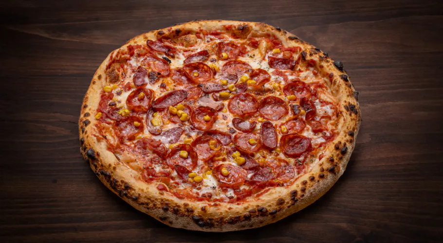

Картинка з директорії food
Млинці з сиромПродукти: Борошно – 1 склянка Сметана домашня – 3 ст.л. плюс сметана для подачі Вода кип'ячена (H2O) або BONAQUA® – 2 склянки Олія – Яйця – 2 шт.
Успіх смачних млинців залежить від того, |